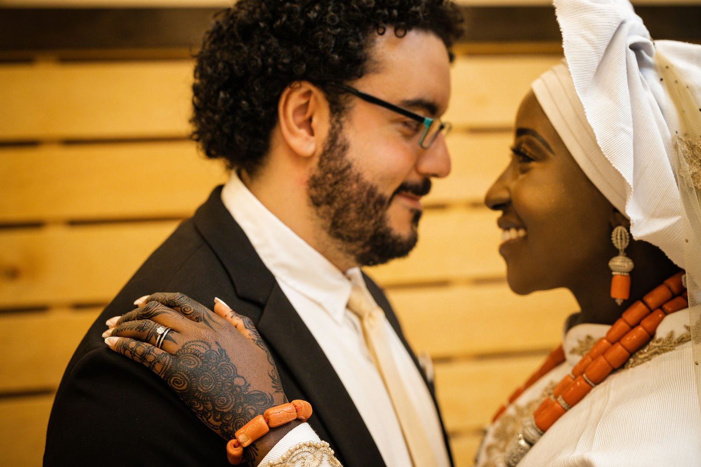
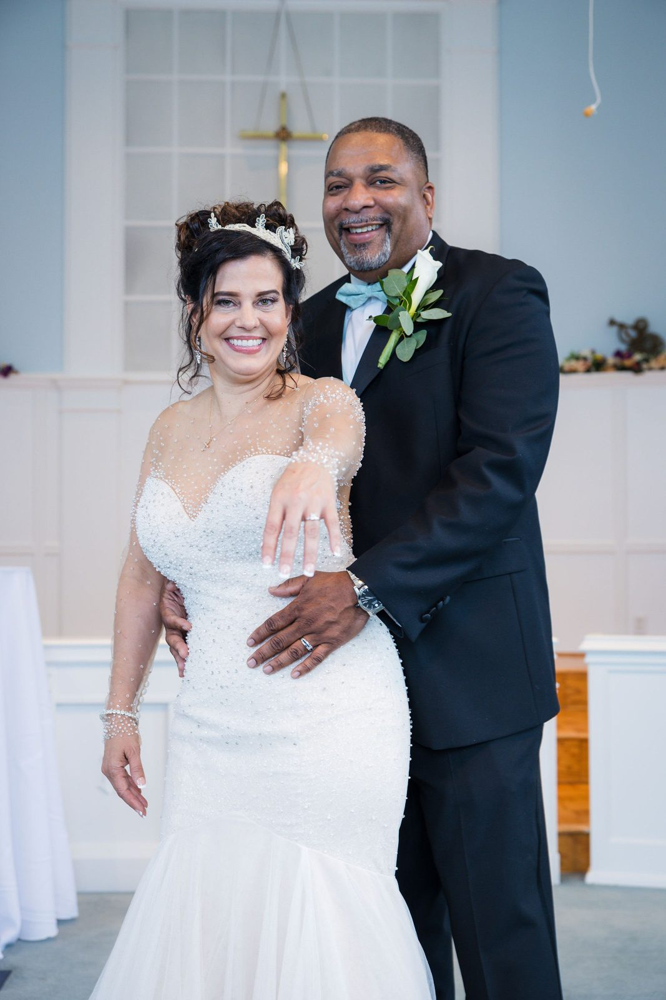
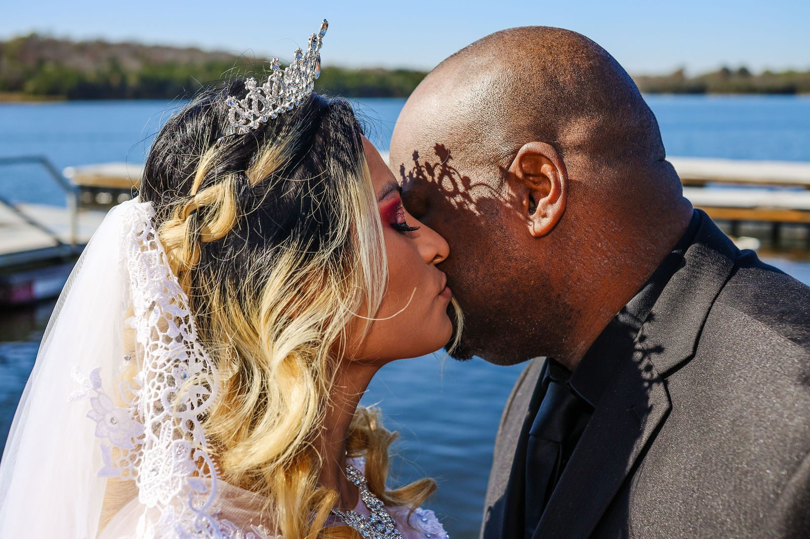
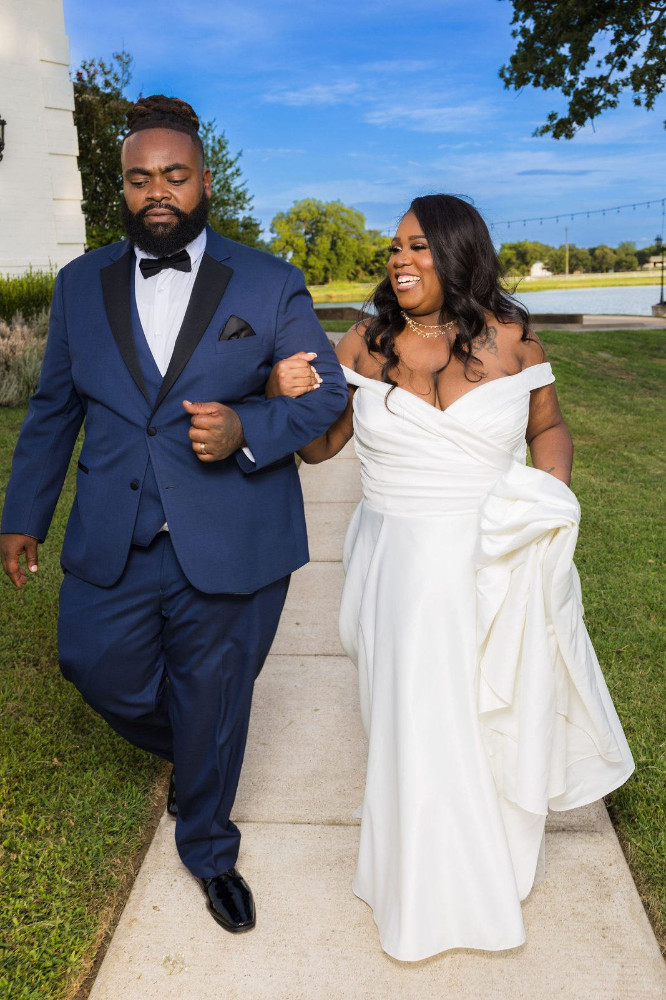
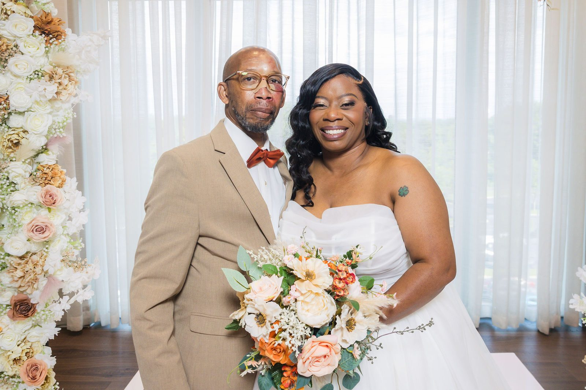
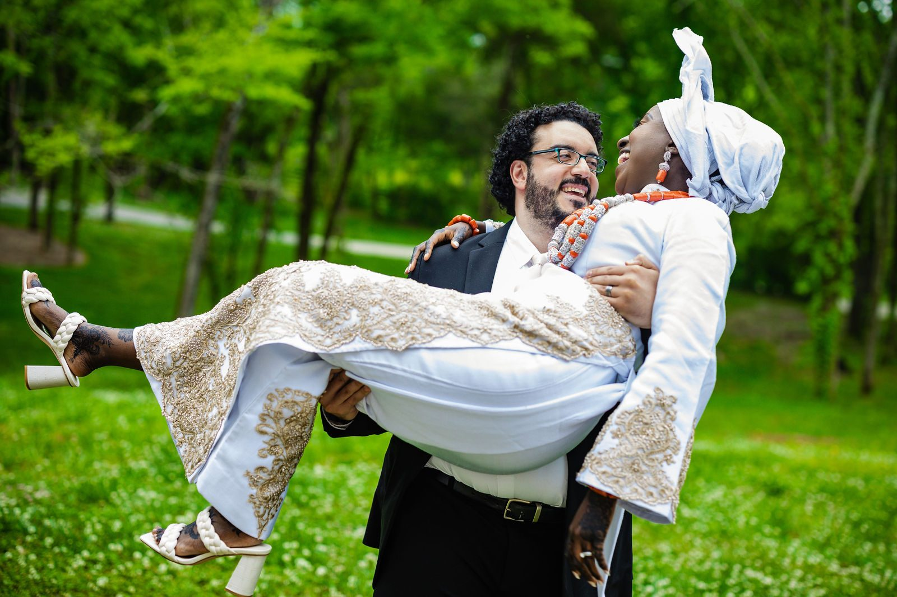
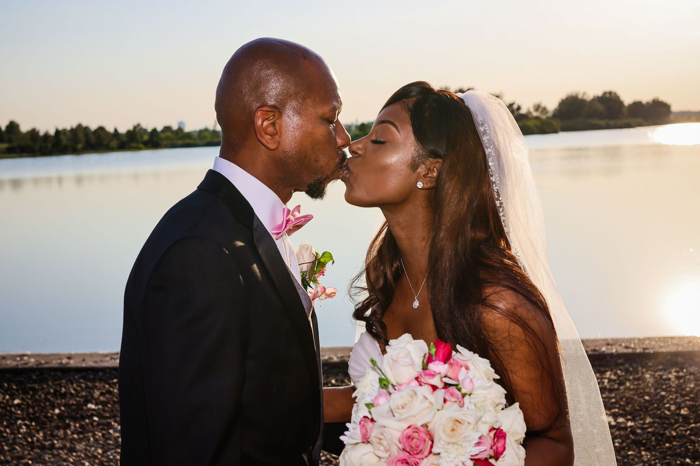

Nashville proposalphotographer. Hidden until the yes.
You get one chance at the moment. Leo Operations plans Nashville surprise proposals with you, hides in plain sight, captures the question, the reaction and the yes, and follows it with a short engagement session while you are both still glowing.
How a surprise proposal shoot works
We start with a call: where you want to ask, when, and what your partner would notice. We pick a spot with a clean background and a place for us to stand that does not give it away, agree on a signal, and time it to the best light. On the day we are already in position, looking like tourists, when you walk up.
After the yes, we step out and shoot 20 to 30 minutes of portraits on location, so you leave with the moment and the photos you will put on the save-the-date.
Where to propose in Nashville
Our guide to the best places to propose in Nashville covers the spots that photograph well and the practical details: crowds, parking, permits and timing. Popular choices include the John Seigenthaler Pedestrian Bridge with the skyline behind you, the Parthenon in Centennial Park, Love Circle at sunset, the stone steps in Percy Warner Park, Cheekwood's gardens and a downtown rooftop.
Photo, video or both
Add a videographer and you get the whole thing with sound: the question, the gasp, the call to Mom. We shoot 4K video and can deliver a short film you can share the same week.
Then the wedding
Many couples who start with a proposal shoot come back for engagement photos and the wedding. We film and photograph weddings across Middle Tennessee with a written shot list and timeline.
Everythingyou need.
Couples wephotographed.








Questions, answered.
How much does it cost to hire a photographer for a proposal?
It depends on the location, how long we need to be in position and whether you add video or a longer session. Send your date and spot and we will quote it in writing.
How far in advance should I book a proposal photographer?
Two to four weeks is comfortable, and more around holidays and Valentine's Day. If the date is close, call us; short notice is often possible.
How will my partner not see you?
We pick a position with natural cover, dress to blend in, use long lenses, and agree on a signal so you know we are ready before you kneel.
What if it rains?
We plan a covered backup spot and stay in touch the day of, so you can move the plan without tipping off your partner.
Do you need a permit to photograph a proposal in a Nashville park?
Some Metro and state parks require a photography permit for professional shoots. We check the rules for your spot and handle any permit we need.
Can you film the proposal too?
Yes. Add video and we capture the full moment in 4K with sound.
Let’s make itunforgettable.
Tell us the date, the place and what you need. We will tell you how we would cover it.
Email Leo Operations →